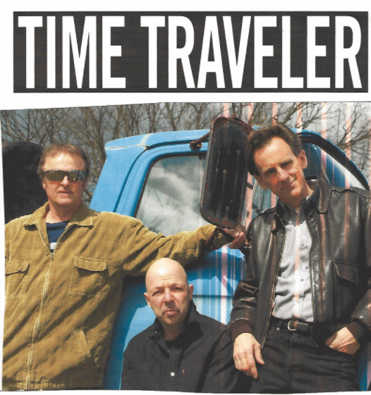

TIME TRAVELER performs a combination of rhythm 'n' blues, vintage rock, and soul songs from the 60s and 70s and are on a mission to get people out onto the dance floor. The band's name is not just a clever way to describe an oldies band -- these guys can actually travel back in time!
Steve Peisch is best-know for his eponymously-named rock band from the 80s called the steves, which reflected his interest in the punk, metal, and minimalist music of that era. Peisch's recent band, blue box set, opened for Andy Pratt, Jim Weider, Beatlejuice, and The Fools, and they were recorded by Brian Charles at zippah studios in Boston.

booking: steve@hundredsrecords.com